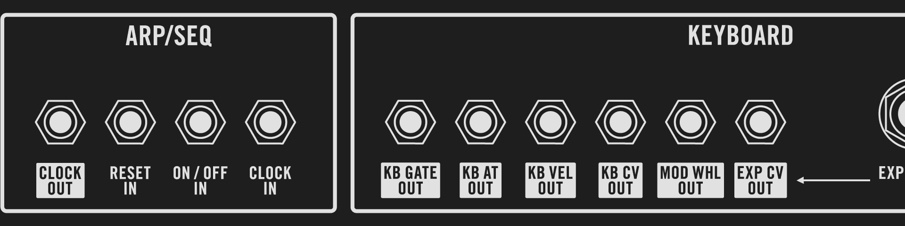

Moog Matriarch back panel mirrored

This is the diagram of the back panel of the Moog Matriarch at scale 1:1, mirrored (but not the labels)
You can print it and tape it on the wall in front of you to quickly view the back labels and enjoy your patches.
Work in progress.